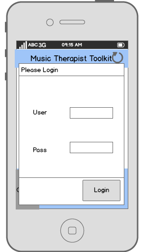
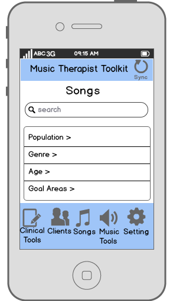
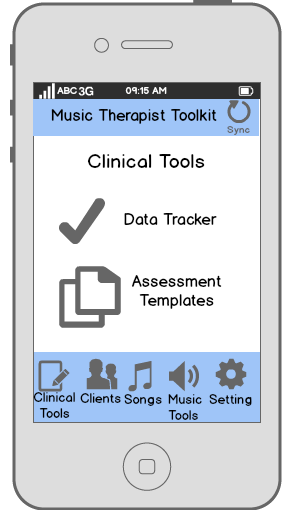
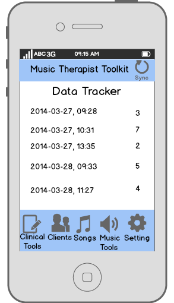
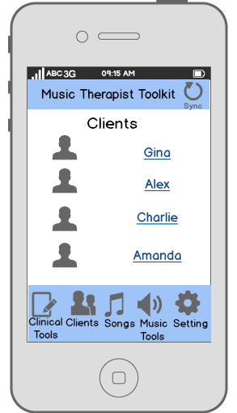
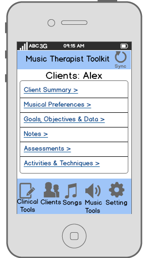
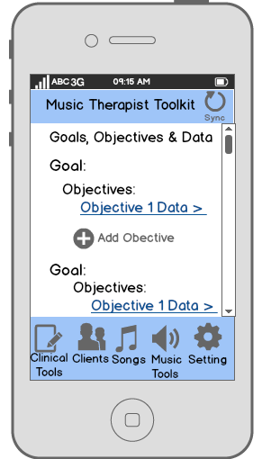
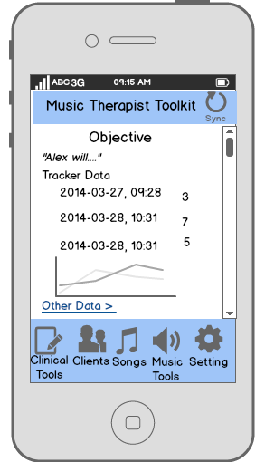

Welcome
Music Therapist Toolkit is a comprehensive app for the music therapist. This page presents a design mock-up of the app.
Why
Music therapy can improve the lives of millions of people. However, sometimes there are challenges for people who practice music therapy. These challenges include finding good songs, data collection, and in-the-field performance.
The Music Therapist Toolkit not only helps individual music therapists, but also helps the field of music therapy as a whole by enabling music therapists to better provide evidence supporting the clinical use of music therapy.Features
It features clinical tools that help music therapists work with client data, including a data tracker and assessment templates.
It contains a song search interface that helps music therapists find effective music for a wide range of clients. It allows the music therapist to filter music by relevant populations, age, genre, and therapy goals. This song search interface can return chord charts/lead sheets and recordings.
The Music Therapist Toolkit also helps music therapists organize client information, more accurately evaluate client goals and objectives, and track changes and progress over time.
Furthermore, it provides the music therapist with quick access to everyday musical tools such as metronomes and tuners.
This app is just one example of how technology can provide opportunities for the growth of music therapy.
Mockups
Secure login to protect client confidentiality
Song database for finding songs for different client groups
Clinical tools for tracking data and making assessments.
 Client list for keeping track of client goals and objectives.
   Status
Music Therapist Toolkit currently exists as a design mock-up.
History
Music Therapist Toolkit was developed by Gina Bucker and Alex Dorsk as a project for Berklee Music Therapy Hack Day 2014. For more information, please contact Gina Bucker at gbuckner -at- berklee -dot- edu.